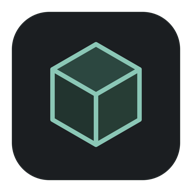
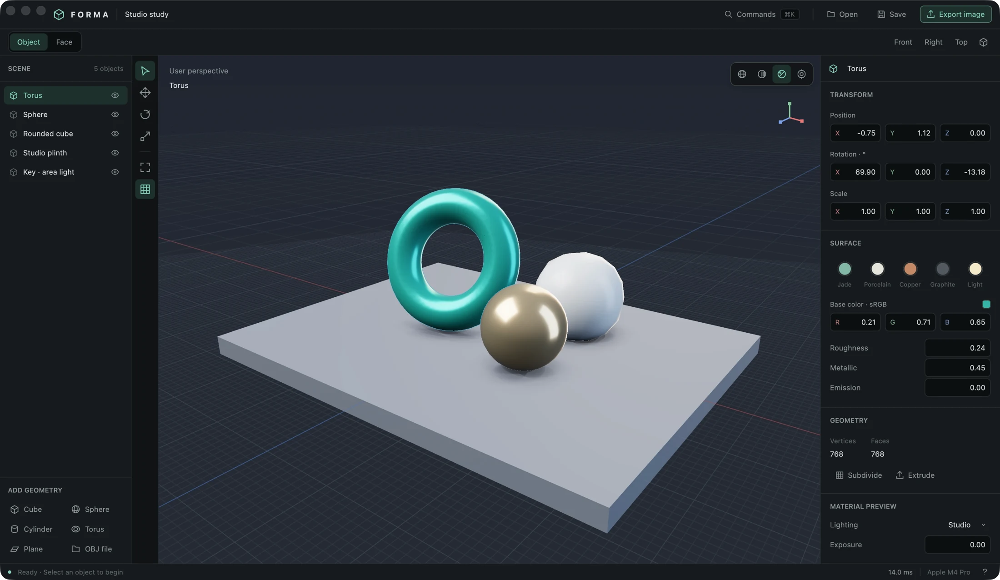

01 / SHAPE
Start simple. Go somewhere.
Add a primitive. Pull a face. Find a form. Direct mesh editing, extrusion, and subdivision make room for happy accidents.

formaA little less interface. A lot more imagination.
Meet Forma, your native 3D studio for Mac.
Made for Mac. Built with Rust. Open source.

LESS BETWEEN YOU AND YOUR IDEA
A focused set of tools for making things in 3D.
Everything close at hand, with room to explore.
01 / SHAPE
Add a primitive. Pull a face. Find a form. Direct mesh editing, extrusion, and subdivision make room for happy accidents.
02 / SURFACE
Explore materials under studio lighting. Dial in the surface, then switch to progressive path tracing to let the scene’s light do its thing.
03 / FLOW
Familiar shortcuts. Exact transforms. A command palette one keystroke away. Follow an idea without hunting through menus.
Your work, wherever it goes next. Save a .forma project, exchange geometry with OBJ, or export your viewport to PNG.
Explore the workflowYOUR NEXT IDEA STARTS HERE
A fresh canvas. A few primitives. Endless possibilities.
Find the latest available downloads and installation notes on GitHub.
macOS · Metal GPU required · Free & open source
Like to make it your own? Build from source
A FEW THINGS TO KNOW
Small details. Clear answers.
Forma currently targets macOS with a Metal GPU. Development has been verified on an Apple M4 Pro running macOS 26.6.2. An older macOS compatibility floor has not yet been established. Check the release notes for the requirements of the build you download.
Yes. The project declares dual MIT and Apache-2.0 licensing. You can explore the code, build it yourself, and contribute on GitHub.
Forma focuses on direct mesh modelling and rendering: add primitives, transform objects and faces, extrude, subdivide, explore materials, and render a scene. It is in early development; animation, sculpting, UV editing, and material textures are outside the current scope.
Yes. Import OBJ polygon geometry, save editable .forma projects, export scene geometry as OBJ, and export the current render mode as PNG. OBJ imports combine groups into one object; imported UVs, supplied normals, and MTL materials are not retained.
Choose the build that matches your Mac and follow that release’s installation notes. If a packaged download is not available yet, the source build instructions explain how to run Forma with Rust and the Apple Command Line Tools. Local bundles are currently unsigned and not notarized.